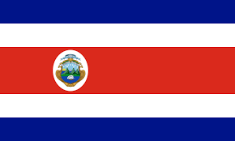
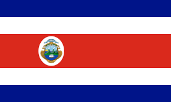

Bilateral
Kerja sama bilateral adalah kerja sama antara dua negara yang disepakati untuk mencapai kepentingan bersama di berbagai bidang, seperti perdagangan, pendidikan, pertahanan, dan budaya.
Contoh Konkret:
Indonesia dan Jepang: Kedua negara memiliki hubungan bilateral yang kuat di berbagai sektor. Salah satu bentuk kerja sama konkret adalah proyek pembangunan infrastruktur seperti Mass Rapid Transit (MRT) di Jakarta, yang didukung oleh bantuan teknologi dan pendanaan dari Jepang.
Costa Rica
Kerja Sama dalam Bidang Energi Terbarukan:
Indonesia dan Costa Rica telah menunjukkan komitmen untuk bekerja sama dalam pengembangan energi terbarukan. Costa Rica, yang dikenal sebagai salah satu negara dengan tingkat penggunaan energi terbarukan yang tinggi, telah menawarkan pelatihan kepada Indonesia dalam penggunaan energi hidro dan geotermal. Hal ini bermanfaat untuk mendukung program Indonesia dalam meningkatkan kapasitas listrik nasionalnya.
Kerja Sama dalam Bidang Pertanian:
Indonesia dan Costa Rica juga berkolaborasi dalam sektor pertanian, khususnya dalam industri kelapa sawit. Sebagai negara produsen kelapa sawit, Indonesia mengundang Costa Rica untuk bergabung dalam inisiatif Palm Oil Producing Countries (CPOPC) yang bertujuan untuk mempromosikan industri kelapa sawit yang berkelanjutan.
Kerja Sama dalam Bidang Transportasi:
Indonesia juga menunjukkan minat dalam berpartisipasi dalam proyek proyek transportasi di Costa Rica. Misalnya, PT. INKA, sebuah perusahaan strategis di Indonesia, diundang untuk terlibat dalam proyek kereta api yang menghubungkan Samudra Pasifik dan Samudra Atlantik di Costa Rica, serta proyek kereta api bandara di San Jose.
Kerja Sama dalam Bidang Kebijakan Kebijakan Lingkungan:
Indonesia dan Costa Rica juga berdiskusi tentang kerja sama dalam mengatasi perubahan iklim dan bencana alam. Kedua negara ini saling berbagi pengalaman dan strategi dalam penanganan bencana alam serta upaya mitigasi perubahan iklim.
Kerja Sama dalam Bidang Riset dan Pengembangan:
Selain itu, Indonesia dan Costa Rica juga menjajaki kolaborasi dalam riset dan pengembangan untuk memerangi pandemi COVID-19. Kerja sama ini mencakup berbagai aspek seperti penelitian vaksin, pengembangan obat, dan strategi penanganan pandemi.


 
